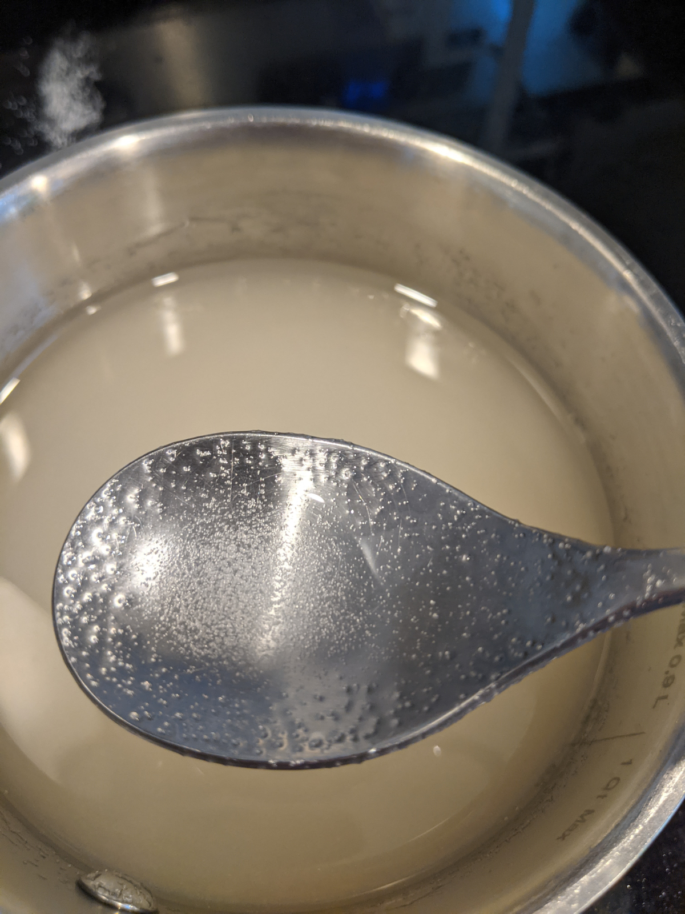
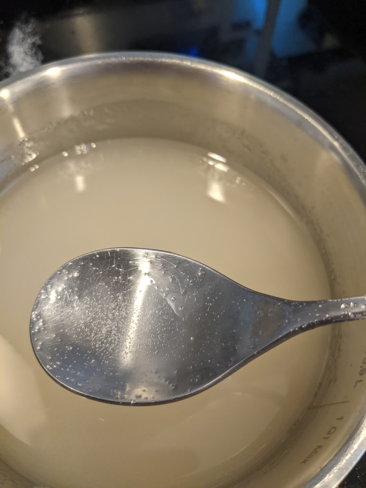

Maxing out your carb intake makes you a better cyclist and reduces fatigue during and after your ride. I always aim for 90g per hour. Gels should not be expensive. Make your own!
The cheapest carb source per gram I have found is granulated sugar, but that is hard to eat as it is. In order to melt it down, you can add water and some heat to form it into a gel. The water content has just about all evaporated off at the end and you are left with only liquid sugar.
This is the base for most gels so you can add whatever mixins you want
Ingredients:
Process:
 